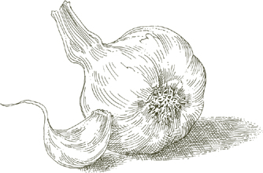
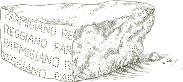
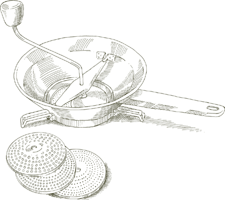

FLAVOR, IN ITALIAN DISHES, builds up from the bottom. It is not a cover, it is a base. In a pasta sauce, a risotto, a soup, a fricassee, a stew, or a dish of vegetables, a foundation of flavor supports, lifts, points up the principal ingredients. To grasp this architectural principle central to the structure of much Italian cooking, and to become familiar with the three key techniques that enable you to apply it, is to take a long step toward mastering Italian taste. The techniques are known as battuto, soffritto, and insaporire.
The name comes from the verb battere, which means “to strike,” and it describes the cut-up mixture of ingredients produced by “striking” them on a cutting board with a chopping knife. At one time, the nearly invariable components of a battuto were lard, parsley, and onion, all chopped very fine. Garlic, celery, or carrot might be included, depending on the dish. The principal change that contemporary usage has brought is the substitution of olive oil or butter for lard, although many country cooks still depend on the richer flavor of the latter. However formulated, a battuto is at the base of virtually every pasta sauce, risotto or soup, and of numberless meat and vegetable dishes.
When a battuto is sautéed in a pot or skillet until the onion becomes translucent and the garlic, if any, becomes colored a pale gold, it turns into a soffritto. This step precedes the addition of the main ingredients, whatever they may be. Although many cooks make a soffritto by sautéing all the components of the battuto at one time, it makes for more careful cooking to keep the onion and the garlic separate. The onion is sautéed first, when it becomes translucent the garlic is added, and when the garlic becomes colored, the rest of the battuto. The reasons are two: one, if you start by sautéing the onion, you are creating a richer base of flavor in which to sauté the battuto; two, because onion takes longer to sauté than garlic, if you were to put both in at the same time, by the time the onion became translucent the garlic would be too dark. If, however, your battuto recipe calls for pancetta, cook the onion and pancetta together to make use of the pancetta’s fat, thus reducing the need for other shortening.
An imperfectly executed soffritto will impair the flavor of a dish no matter how carefully all the succeeding steps are carried out. If the onion is merely stewed or incompletely sautéed, the taste of the sauce, or the risotto, or the vegetable never takes off and will remain feeble. If the garlic is allowed to become dark, its pungency will dominate all other flavors.
Note A battuto usually, but not invariably, becomes a soffritto. Occasionally, you combine it with the other ingredients of the dish as is, in its raw state, a crudo, to use the Italian phrase. This is a practice one resorts to in order to produce less emphatic flavor, such as, for example, in making a roast of lamb in which the meat cooks along with the battuto a crudo from the start. Another example is pesto, a true battuto a crudo, although, perhaps because it has traditionally been pounded with a pestle rather than chopped with a blade, it is not always recognized as such. Yet there are many Italian cooks who, in referring to any battuto, might say they are making a pestino, a “little pesto.”
The step that follows a soffritto is called insaporire, “bestowing taste.” It usually applies to vegetables, inasmuch as, in Italian cooking, vegetables are the critical ingredient in most first courses—pastas, soups, risotti—and in many fricassees and stews, and often constitute an important course on their own. But the step may also apply to the ground meat that is going to be turned into a meat sauce or meat loaf, or to rice, when it is toasted in the soffritto as a preliminary to making risotto. As you become aware of it, you will spot it in countless recipes.
The technique of insaporire requires that you add the vegetables or other principal ingredients to the soffritto base and, over very lively heat, briskly sauté them until they have become completely coated with the flavor elements of the base, particularly the chopped onion. One can often trace the unsatisfying taste, the lameness of dishes purporting to be Italian in style, to the reluctance of some cooks to execute this step thoroughly, to their failure to give it enough time over sufficient heat, or even to their skipping it altogether.
A soffritto is sometimes executed with olive oil as the only fat, but on those occasions when one might find the flavor of olive oil intrusive Italian cooks use butter together with neutral-tasting vegetable oil. Combining the two enables one to sauté at a higher temperature without scorching the butter or having to clarify it.
 The Components
The Components 
Of all the ingredients used in Italian cooking, none produces headier flavor than anchovies. It is an exceptionally adaptable flavor that accommodates itself to any role one wishes to assign it. Chopped anchovy dissolving into the cooking juices of a roast divests itself of its explicit identity while it contributes to the meat’s depth of taste. When brought to the foreground, as in a sauce for pasta or with melted mozzarella, anchovy’s stirring call takes absolute command of our taste buds. Anchovies are indispensable to bagna caôda, the Piedmontese dip for raw vegetables, and to various forms of salsa verde, the piquant green sauces served with boiled meats or fish.
What anchovies to get and how to prepare them The meatier anchovies are, the richer and rounder is their flavor. The meatiest anchovies are the ones kept under salt in large tins and sold individually, by weight. One-quarter pound is, for most purposes, an ample quantity to buy at one time. Prepare the fillets as follows:
• Rinse the whole anchovies under cold running water to remove as much as possible of the salt used to preserve them.
• Take one anchovy at a time, grasping it by the tail and, with the other hand, use a knife gently to scrape off all its skin. After skinning it, remove the dorsal fin along with the tiny bones attached to it.
• Push your thumbnail into the open end of the anchovy opposite the tail and run it against the bone, opening the anchovy flat all the way to the tail. With your hand, loosen and lift away the spine, and separate the fish into two boneless fillets. Brush your fingertips over both sides of the fillets to detect and remove any remaining bits of bone.
• Rinse under cold running water, then pat thoroughly dry with paper towels. Place the fillets in a shallow dish. When one layer of fillets covers the bottom of the dish, pour over it enough extra virgin olive oil to cover. As you add fillets to the dish, pour olive oil over each layer. Make sure the top layer is fully covered by oil.
• If you are not going to use them within 2 or 3 hours, cover the dish and refrigerate. If the dish lacks a lid of its own use plastic wrap. The anchovies will keep for 10 days to 2 weeks, but they taste best when consumed during the first week. Prepared in this manner, the fillets are powerfully good as an appetizer or even a snack, when spread on a thickly buttered slice of crusty bread.
Note If you cannot find the salted whole anchovies described above and must buy prepared fillets, look for those packed in glass so you can choose the meatier ones. Do not be tempted by bargain-priced anchovies because the really good ones are never cheap, and the cheap ones are likely to be the really awful—mealy, salt-drenched—stuff that has given anchovies an undeserved bad name.
If you happen to be using canned anchovies, don’t keep the leftover ones in the tin. Remove them, curl them into rolls, put them in a small jar or deep saucer, cover them with extra virgin olive oil, and refrigerate.
Do not use anchovy paste from a tube, if you can help it. It is harsh and salty and has very little of the warm, attractive aroma that constitutes the principal reason for using anchovies.
Cooking with anchovies On most occasions, anchovies are chopped fine so that they can more easily dissolve and merge their flavor with that of the other ingredients. Never put chopped anchovies into very hot oil because they will fry and harden instead of dissolving, and their flavor may turn bitter. Remove the pan from heat when adding the anchovies, putting it back on the burner only when, through stirring, the anchovies have begun to break down into a paste. If you can arrange to have another pot nearby with water boiling, place the pan with the anchovies over it, double-boiler fashion, and stir the anchovies until they dissolve.
Balsamic vinegar, a centuries-old specialty produced in the province of Modena, just north of Bologna, is made entirely from the boiled-down must—the concentrated, sweet juice—of white grapes. True balsamic vinegar is aged for decades in a succession of barrels, each made of a different wood.
How to judge it The color must be a deep, rich brown, with brilliant flashes of light. When you swirl the vinegar in a wine glass, it must coat the inside of the glass as would a dense, but flowing syrup, neither splotchy nor too thin. Its aroma should be intense, pleasantly penetrating. A sip of it will deliver balanced sweet and sour sensations, neither cloying nor too sharp, on a substantial and velvety body. It is never inexpensive, and it is too precious and rare ever to be put up in a container much larger than a perfume bottle. The label must carry, in full, the officially established appellation, which reads: Aceto Balsamico Tradizionale di Modena. All other so-called balsamic vinegars are ordinary commercial wine vinegar flavored with sugar or caramel, bearing no resemblance to the traditional product.
How to use it True balsamic vinegar is used sparingly. In a salad it never replaces regular vinegar; it is sufficient to add a few drops of it to the basic dressing of olive oil and pure wine vinegar. In cooking, it should be put in at the very end of the process or close to it so that its aroma will carry through into the finished dish. Aceto balsamico is marvelous over cut, fresh strawberries when they are tossed with it just before serving. Regrettably, balsamic vinegar has become a cliché of what is sometimes described as “creative” cooking, in somewhat the same way that tomato and garlic were once clichés of spaghetti-house Italian cooking. It should not be used so often or so indiscriminately that its flavor loses the power to surprise and its emphatic accents become tiresome with repetition.
Basilico

The most useful thing one can know about basil is that the less it cooks, the better it is, and that its fragrance is never more seductive than when it is raw. It follows, then, that you will add basil to a pasta sauce only after it is done, when it is being tossed with the pasta. By the same consideration, that most concentrated of basil sauces, pesto, should always be used raw, at room temperature, never warmed up. Occasionally, one cooks basil in a soup or stew or other preparation, sacrificing some of the liveliness of its unfettered aroma in order to bond it to that of the other ingredients. If you are in doubt, however, or improvising, put it in at the very last moment, just before serving.
How to use basil Use only the freshest basil you can. Don’t make do with blackened, drooping leaves. If you grow your own, pick only what you need that day, preferably plucking the leaves early in the morning before they’ve had too much sun. When you are ready to use the basil, rinse it quickly under cold running water or wipe the leaves with a dampened cloth. Unless the recipe calls for thin, julienned strips, it’s best not to take a knife to basil. If you do not want to put the whole leaves in your dish, tear them into smaller pieces with your hands, rather than cutting them. Do not ever use dried or powdered basil. Many people freeze or preserve basil. I’d rather use it fresh and, if it isn’t available, wait until its season returns.
Alloro
Bay may be the most versatile herb in the Italian kitchen. It is used in pasta sauces, it aromatizes such different preserved foods as goat cheese in olive oil or sun-dried figs, it finds its way into most marinades for meat, it is the ideal herb for the barbecue: on a fish skewer, or over calf’s liver, or even in the fire itself. There is no more agreeable match than bay leaves with pears cooked in red wine or with boiled chestnuts.
What to get Bay leaves dry beautifully and keep indefinitely. Buy only the whole leaves, not the crumbled or powdered, and keep them in a tightly closed glass jar in a cool cupboard. Before using, whether the leaves are dried or fresh, wipe each leaf lightly with a damp cloth.
Note If you have a garden or terrace or balcony, bay is a hardy perennial that grows quickly into a handsome plant with a nearly inexhaustible supply of leaves for the kitchen. If your winters are bitter and long, bring the bay indoors until spring.
Fagioli
Legumes are used liberally throughout Italy, but they are nowhere treated with the affection they receive in the central regions of Tuscany, Abruzzi, Umbria, and Latium. Tuscans favor cannellini, or white kidney beans. Chick peas and fava beans triumph in Abruzzi and Latium. Umbria is celebrated for its lentils. In the north there is a pocket of bean adoration that rivals that of the center and it is in the Venetian northeast corner of the country, where perhaps the finest version of the classic bean soup—pasta e fagioli—is produced. The beans Venetians use are marbled pink and white versions of the cranberry or Scotch bean of which the most highly prized is the lamon, beautifully speckled when raw, dark red when cooked.
Some beans are available fresh for only a short time of the year and, outside Italy, some are rarely seen in their fresh-in-the-pod state. In their place you can use either canned or dried beans. The dried are much to be preferred, and not only because they are so much more economical than the canned. When properly cooked, dried beans have flavor and consistency that the bland, pulpy canned variety cannot match.
Cooking dried beans The instructions that follow are valid for all dried legumes that need to be precooked, such as white cannellini beans, Great Northern beans, red and white kidney beans, cranberry beans, chick peas, and fava beans. Lentils do not need to be precooked.
• Put the quantity of beans required by the recipe in a bowl and add enough water to cover by at least 3 inches. Put the bowl in some out-of-the-way corner of your kitchen and leave it there overnight.
• When the beans have finished soaking, drain them, rinse them in fresh cold water, and put them in a pot that will accommodate the beans and enough water to cover them by at least 3 inches. Put a lid on the pot and turn on the heat to medium. When the water comes to a boil, adjust the heat so that it simmers steadily, but gently. Cook the beans until tender, but not mushy, about 45 minutes to 1 hour. Add salt only when the beans are almost completely tender so that their skin does not dry and crack while cooking. Taste them periodically so you’ll know when they are done. Keep the beans in the liquid that you cooked them in until you are ready to use them. If necessary, they can be prepared a day or two ahead of time and stored, always in their liquid.
This is the roe of the female thin-lipped gray mullet, which has been extracted with its membrane intact, salted, lightly pressed, washed, and dried in the sun. It has the shape of a long, flattened tear drop, usually varying in length between 4 and 7 inches, is of a dark, amber gold color, and usually comes in pairs. In the past it was always encased in wax but now it is more frequently vacuum-sealed in clear plastic. The finest bottarga comes from the mullet—muggine in Italian—taken from the brackish waters of Cabras, a lake off the western shore of Sardinia.
The flavor of good bottarga is delicately spicy and briny, very pleasantly stimulating on the palate. After peeling off its membrane, it can be sliced paper thin and added to green salads, or to boiled cannellini, or served as an appetizer on thin, toasted rounds of buttered bread with a slice of cucumber. It is delicious grated and tossed with pasta. Bottarga is never cooked.
Another kind of bottarga is that made from tuna roe; it is very much larger, a dark reddish brown in color, and shaped like a long brick. It is drier, sharper, more coarsely emphatic in flavor than mullet bottarga, for which it is a much cheaper, but not desirable substitute. Tuna bottarga is quite common throughout the countries on the eastern shores of the Mediterranean.
The bread crumbs used in Italian cooking are made from good stale bread with the addition of no flavoring of any kind whatever. They must be very dry, or they will become gummy, particularly in those dishes where they are tossed with pasta. Once the bread has been ground into fine crumbs, dry the crumbs either by spreading them on a cookie sheet and baking them in a 375° oven for 15 minutes, or toasting them briefly in a cast-iron skillet.
Brodo
The broth used by Italian cooks for risotto, for soups, and for braising meat and vegetables is a liquid to which meat, bones, and vegetables have given their flavor, but it is not a strong, dense reduction of those flavors. It is not stock, as the term is used in French cooking. It is light bodied and soft spoken, helping the dishes of which it is a part to taste better without calling attention to itself.
Italian broth is made principally with meat, together with some bones to give it a bit of substance. When I make broth I always try to have some marrow bones in the pot. The marrow itself makes a delicious appetizer later on grilled or toasted bread, seasoned with Horseradish Sauce.
The finest broth is that produced by a full-scale Bollito Misto. You may be reluctant, however, to undertake making bollito misto every time you need to replenish your supply of broth. If you are an active cook, you can collect and freeze meat for broth from the boning and preparation of different cuts of veal, beef, and chicken, stealing here and there a juicy morsel from a piece of meat before it is minced for a stuffing or for a meat sauce, or before it goes into a beef or a veal stew. Do not use lamb or pork, the flavor of which is too strong for broth. Use chicken giblets and carcasses most sparingly because their flavor can be disagreeably obtrusive. When ready to make broth, enrich the assortment with a substantial fresh piece of beef brisket or chuck.
1½ to 2 quarts
Salt
1 carrot, peeled
1 medium onion, peeled
1 or 2 stalks celery
¼ to ½ red or yellow bell pepper, cored and stripped of its seeds
1 small potato, peeled
1 fresh, ripe tomato OR a canned Italian plum tomato, drained
5 pounds assorted beef, veal, and chicken (the last optional) of which no more than 2 pounds may be bones
1. Put all the ingredients in a stockpot, and add enough water to cover by 2 inches. Set the cover askew, turn on the heat to medium, and bring to a boil. As soon as the liquid starts to boil, slow it down to the gentlest of simmers by lowering the heat.
2. Skim off the scum that floats to the surface, at first abundantly, then gradually tapering off. Cook for 3 hours, always at a simmer.
3. Filter the broth through a large wire strainer lined with paper towels, pouring it into a ceramic or plastic bowl. Allow to cool completely, uncovered.
4. When cool, place in the refrigerator for several hours or overnight until the fat comes to the surface and solidifies. Scoop up and discard the fat.
5. If you are using the broth within 3 days after making it, return the bowl to the refrigerator. If you expect to keep it any longer than 3 days, freeze it as described in the note below.
How to keep broth It is safe to keep broth in the refrigerator for a maximum of 3 days after making it, but unless you are certain you will use it that quickly, it is best to freeze it. It’s impossible to overemphasize how convenient it always is to have frozen broth available. The most practical method is to freeze it in ice-cube trays, unmold it as soon as it is solid, and transfer the cubes to airtight plastic bags. Distribute the cubes among several containers, so that when you are going to use the broth you will open only as many bags as you need.
Capperi
Capers are the blooms, nipped while they are still tightly clenched buds, of a plant whose spidery branches hug stone walls and rocky hillsides throughout much of the Mediterranean region. Capers are used abundantly in Sicilian cooking, but no Italian kitchen should be without them. They have their assigned place in many classic preparations, in sauces for pasta, meat, fish, in stuffings, and their sprightly, pungent, yet not harsh flavor makes them one of those condiments that readily support the improvisational, casual style that characterizes much Italian cooking.
What to look for At one time I had a strong preference for the tiniest capers, the nonpareil variety from Provence. While they are certainly desirable, I’d now rather work with the larger capers from the islands off Sicily and the even larger ones from Sardinia, whose flavor has a more expansive, more stirring quality. Capers, particularly the Provençal ones, are usually pickled in vinegar. They have the advantage of lasting indefinitely, especially if refrigerated after being opened. The drawback is that the vinegar alters their flavor, making it sharper than it needs to be. In Italy, particularly in the South, capers are packed in salt, and they taste better. They are available in markets abroad as well, particularly in good ethnic groceries. Their disadvantage is that, before they can be used, they must be soaked in water 10 to 15 minutes and rinsed in several changes of water, otherwise they will be too salty. Nor can they be stored for as long as the vinegar-pickled kind because, when the salt eventually absorbs too much moisture and becomes soggy, they start to spoil. The color of the salt is an indication of the capers’ state of preservation. It should be a clean white; if it is yellow the capers are rancid.
Fontina is made from the unpasteurized milk of cows that graze on mountain meadows in the Val d’Aosta, the Alpine region of Italy that adjoins France and Switzerland. Fontina has many imitators, both inside and outside Italy, but only the Val d’Aosta version has the sweet, distinctly nutty flavor that makes it probably the finest cheese of its kind. It is ideal for melting in a Piedmontese-style fonduta, or over gratinéed asparagus, or to bind a slice of prosciutto to a sautéed scallop of veal. Its buttery taste is exceptionally delicate but, unlike that of its imitators, not insignificant. It is ideal for cooking when you want the subtlest of cheese flavors.

To equate Italian food with garlic is not quite correct, but it isn’t totally wrong, either. It may strain belief, but there are some Italians who shun garlic, and many dishes at home and in restaurants are prepared without it. Nevertheless, if there were no longer any garlic, the cuisine would be hard to recognize. What would roast chicken be like without garlic, or anything done with clams, or grilled mushrooms, or pesto, or an uncountable number of stews and fricassees and pasta sauces?
When preparing them for Italian cooking, garlic cloves are always peeled. Once peeled, they may be used whole, mashed, sliced thin, or chopped fine, depending on how manifest one wants their presence to be. The gentlest aroma is that of the whole clove, the most unbuttoned scent is that exuded by the chopped. The least acceptable method of preparing garlic is squeezing it through a press. The sodden pulp it produces is acrid in flavor and cannot even be sautéed properly.
It is possible, and often desirable, for the fragrance to be barely perceptible, a result one can achieve by sautéing the garlic so briefly that it does not become colored, and then letting it simmer in the juices of other ingredients as, for example, when thin slices of it are cooked in a tomato sauce. On occasion, a more emphatic garlic accent may be appropriate, but never, in good Italian cooking, should it be allowed to become harshly pungent or bitter. When sautéing garlic, never take your eyes off it, never allow it to become colored a dark brown because that is when the offensive smell and taste develop. In a few circumstances, when the balance of flavors in a dish demand and support a particularly intense garlic flavor, garlic cloves may be cooked until they are the light brown color of walnut shells. For most cooking, however, the deepest color you should ever allow garlic to become is pale gold.
Choosing and storing Garlic is available all through the year, but it is best when just picked, in the spring. When young and fresh, the cloves are tender and moist, and the skin is soft and clear white. The flavor is so sweet that one can be careless about quantity. As it ages, and unfortunately, outside of the growing areas, older garlic is what one will find, it dries, losing sweetness and acquiring sharpness, its skin becoming flaky and brittle, its flesh wrinkled and yellow, like the color of old ivory. It is still good to cook with, but you must use it sparingly and cook it to an even paler color than you would the fresh. I have seen chefs split the clove to remove any part of it that may have turned green. I don’t find this necessary, but I do discard the green shoot when it sprouts outside the clove.
Choose a head of garlic by weight and size. The heavier it feels in the hand, the fresher it’s likelier to be, and large heads have bigger cloves that take longer to dry out. Use only whole garlic, do not be tempted by prepared chopped garlic, or garlic-flavored oils, or powdered garlic. All such products are too harsh for Italian cooking.
Keep garlic in its skin until you are ready to use it. Do not chop it long before you need it. Store garlic out of the refrigerator in a crock with a lid fitting loosely enough so air can flow through. There are perforated garlic crocks made that do the job quite well. Braids of garlic can look quite beautiful hanging in a kitchen, but the heads dry out fairly quickly and all you will have left at some point are empty husks.
Maggiorana

It is the herb most closely associated with the aromatic cooking of Liguria, the Italian Riviera, where it is used in pasta sauces, in savory pies, in stuffed vegetables, and—possibly most triumphantly—in insalata di mare, seafood salad. Its bewitchingly spicy and flowery aroma vanishes almost entirely when marjoram is dried. One should make every possible effort to get it fresh or, failing that, frozen.
Imitation is the sincerest form of flattery but, in the case of mortadella, it has come closer to character assassination. The products that call themselves mortadella or go by the name of the city where it originated, Bologna, have completely obscured the merits of perhaps the finest achievement of the sausage-maker’s art.
The name mortadella may derive from the mortar the Romans used to employ to pound sausage meat into a paste before stuffing it into its casing. Another explanation suggests that the origin of the name can be traced to the myrtle berries—mirto in Italian—that were once used to aromatize the mixture. The lean meat of which mortadella is composed—the shoulder and neck from carefully selected hogs—together with the jowl and other parts of the pig that the traditional formula requires, is, in fact, ground to a creamy consistency before it is studded with half-inch cubes of fine hogback mixed with a blend of spices and condiments that varies from producer to producer, and stuffed into the casing. Every step of the operation is critical in the making of mortadella, but the one that follows after it is cased is probably the one most responsible for the texture and fragrance that characterize a superior product. Mortadella is finished only when it has undergone a special cooking procedure. It is hung in a room where the temperature is kept at 175° to 190° Fahrenheit, and there it is slowly steamed for up to 20 hours.
Mortadella comes in all sizes, from miniatures of one pound to colossi of 200 or more pounds and 15 inches in diameter. The latter, for which a special beef casing must be used, is the most prized because it takes longer to cook and develops subtler, finer flavors. When it is cut open, the fragrance that rises from the glowing peach-pink meat of a choice, large, Bolognese mortadella is possibly the most seductive of any pork product.
Mortadella’s uses In the cooking of Bologna, minced mortadella is used to enrich the flavor of the stuffing of tortellini and of ground meat dishes such as meat loaf. Cut into sticks, it is breaded and fried as part of a fritto misto or a warm antipasto. It is also served thickly sliced as part of an antipasto platter of cold meats. On a Bolognese table, you will often find a saucer of mortadella cut into half-inch cubes. Probably its greatest service to the nation has been in keeping alive generations of school children sent to class breakfastless, but with a roll in their satchel that is generously stuffed with sliced mortadella to bring sustenance to the traditional mid-morning interval.
Mozzarella di Bufala
At one time, all mozzarella was di bufala, made from water buffalo milk. The buffalos graze on the pastures of Campania, the southern region of which Naples is the capital. Their milk is much creamier than cow’s milk, and the cheese it produces is velvety in texture, pleasingly fragrant and, unlike other mozzarella, it has decided flavor, being sweet and, at the same time, delicately savory.
Pizza, when it was created in Naples, was always made with mozzarella di bufala. It is too expensive an ingredient today for commercial pizza, but it will immeasurably enhance homemade pizza, and such preparations as parmigiana di melanzane. It is, moreover, the mozzarella to choose, if you have the choice, for a caprese salad, which consists of mozzarella slices, sliced ripe tomatoes, and basil.
Noce Moscata
We probably have the Venetians to thank for making nutmeg, along with other Eastern spices, available in Italy, but it is in Bolognese cooking that it has put its most tenacious roots. Nutmeg is indispensable to Bolognese meat sauce, and to the stuffings for its homemade pasta. It is used elsewhere too, such as in sauces with spinach and ricotta, in certain savory vegetable pies, in some desserts. One must use it carefully because, if a shade too much is added, the warmth of its musky flavor is lost in a dominant sensation of bitterness.
Use only whole nutmegs, which you can store in a tightly closed glass jar in a kitchen cabinet. Grate the nutmeg when needed, easily done on its special, small, curved grater. Any grater with very fine holes will do the job, however.
Olio d’Oliva Extra Vergine
Of all the grades of oil that can be marketed as olive oil, the only one a careful cook should look for is “extra virgin.” To qualify as “virgin” an olive oil must be cold-processed, produced solely by the mechanical crushing of the whole olive and its pit, wholly excluding the use of chemical solvents or any other technique of extraction. The varying degrees of “virginity” are determined by the percentage of oleic acid contained. The highest grade, “extra virgin,” is reserved for oils with 1 percent oleic acid or less. If the percentage of acid exceeds 4 percent, the oil must be rectified to lower the acid content and then it may no longer be labeled “virgin.” Up until 1991, it was sold as “pure,” a term that may have been technically accurate but did not seem to be an appropriate handle for the lowest marketable grade of olive oil.
Choosing an extra virgin olive oil Italian oils offer such a broad range of aromas and flavors that, when a representative selection is available, one can experiment with a view to choosing the oil that best supports one’s own style of cooking. The oils produced on the Veneto side of Lake Garda and on the hills north of Verona are probably Italy’s finest, certainly its most elegant: sweetly fragrant, nutty, with a gossamer touch on the palate. Those from Liguria are shier of flavor, but they have a thicker, more viscous feel. The oils from central Italy—of Tuscany and Umbria—are penetratingly fruity and, those of Tuscany in particular, even spicy and scratchy. The oils that come from further south have the scent of Mediterranean herbs—rosemary, oregano, thyme, with appley, almost sweet, pronouncedly fruity flavor. The only way to determine which one pleases one’s palate most is to try as many as possible. The tasting qualities to look for, no matter what the other characteristics of the oil may be, are sensations of liveliness, freshness, and lightness. Avoid oils that taste fat, that feel sticky, that have earthy or moldy odors.
Storing olive oil Olive oil is perishable, sensitive to air, light, and heat. The Italian ministry of agriculture recommends that it be used within a year and a half after it is bottled. It can be kept in its original container, if unopened, for that much time, or slightly longer, if stored in a cool, dark cupboard or in a wine cellar. Once opened, it should be used as soon as possible, certainly within a month or six weeks. Keep it in a bottle with a tight closure. Do not keep it in one of those oil cans with a spout unless you use it up rather quickly. If an opened bottle of oil has been around for some time, smell it before using it and, if it smells and tastes rancid, discard it or it will spoil the flavor of anything you cook.
Cooking with olive oil It is sometimes suggested that while one should choose the very best oil one can for a salad, it’s all right to use a lower grade for cooking. Such advice is flawed by a flagrant contradiction. One chooses an olive oil because of its flavor, and that flavor is no less critical to a pasta sauce, or to a dish of vegetables, than it is to a lettuce leaf. Once you have had spinach or mushrooms or a tomato sauce cooked in marvelous olive oil, you will not willingly have them any other way.
If taste is the overriding consideration, use the olive oil with the finest flavor as freely for cooking as for salads. If other factors, such as cost, must be given priority, cook with olive oil less often, replacing it with vegetable oil, but in those less frequent circumstances when you’ll be turning to olive oil, cook with the best you can afford.

Olive
The olives used most commonly in Italian cooking are the glossy, round, black ones known in Italy as greche, Greek. They should not be confused with the other familiar variety of Greek olive, the purple Kalamata, elongated, tapering at the ends, whose flavor is ill suited to Italian dishes.
When cooking with olives, it’s preferable to add the olives at the very last, when the sauce, the fricassee, the stew, or whatever you are making, is nearly done. Cooking olives a long time accentuates their bitterness.
Origano
Botanically speaking, oregano is closely related to marjoram, but its brasher scent is more closely associated with the cooking of the South, with pizza and with pizza-style sauces. It is excellent in some salads, with eggplant, with beans, and extraordinary in salmoriglio, the Sicilian sauce for grilled swordfish. Unlike marjoram, oregano dries perfectly.
Pancetta, from pancia, the Italian for belly, is the distinctive Italian version of bacon. In its most common form, known as pancetta arrotolata, it is bundled jelly-roll fashion into a salami-like shape. To make pancetta arrotolata, the rind is first stripped away, then the meat is dressed with salt, ground black pepper, and a choice of other spices, which, depending on the packer, may include nutmeg, cinnamon, clove, or crushed juniper berries. It is moister than bacon because it is not smoked. When it has been cured for two weeks, it is tightly rolled up and tied, then wrapped in organic or, more commonly, artificial casing. At this point, it can be eaten as is, as one would eat prosciutto. It is more tender and considerably less salty than prosciutto. Its more important use, however, is in cooking, where its savory-sweet, unsmoked flavor has no wholly satisfactory substitute. Some Italians use a similarly cured, flat version of pancetta still attached to its rind, known as pancetta stesa. Pancetta is never smoked except in Italy’s northeastern regions—Veneto, Friuli, Alto Adige—where a preference for flat, smoked bacon similar to North American slab bacon, is one of the legacies of a century of Austrian occupation.

Common usage bestows the name “Parmesan” on almost any cheese that can be grated over pasta, but the qualities of a true Parmesan—rich, round flavor and the ability to melt with heat and become inseparable from the ingredients to which it is joined—are vested in a cheese that has no rivals: parmigiano-reggiano.
What is parmigiano-reggiano? The name is stringently protected by law. The only cheese that may bear it is produced—by a process unchanged in seven centuries—from the partly skimmed milk of cows raised in a precisely circumscribed territory mainly within the provinces of Parma and Reggio Emilia in the region of Emilia-Romagna. The totally natural process—nothing is added to the milk, but rennet; the long aging of eighteen months; the flora and the microorganisms that are specific to the pastureland of the production zone—all are contributors to the taste of parmigiano-reggiano and to the way it performs in cooking, qualities no other cheese can claim in the same measure.
How to buy it, how to store it If you have the choice, do not buy a precut wedge of parmigiano-reggiano, but ask that it be cut from the wheel. To protect the cheese’s special qualities, one must keep it from drying out. The more it is cut up, the more it loses moisture, until it begins to taste sharp and coarse. For the same reason, never buy any Parmesan in grated form and, at home, grate it only when you are ready to use it.
Take a careful look at the cheese you are about to buy. It should be a dewy, pale amber color, uniform throughout, without any dry white patches. In particular, look at the color next to the rind: If it has begun to turn white, the cheese has been stored badly and is drying out. If there is a broad chalk white rim next to the rind, the cheese is no longer in optimum condition. If there are no visible defects, ask to taste it. It should dissolve creamily in the mouth, its flavor nutty and mildly salty, but never harsh, sharp, or pungent.
When you have found an example of parmigiano-reggiano that meets all requirements, you might be well advised to buy a substantial amount. If it is more than you expect to use in two or three weeks’ time, divide it into two pieces, or more if it is exceptionally large. Each piece must be attached to a part of the rind. First wrap it tightly in wax paper, then wrap it in heavy-duty aluminum foil. Make sure no corners of cheese poke through the foil. Store on the bottom shelf of your refrigerator.
If you are keeping the cheese a long while, check it from time to time. If you find that the color has begun to lose its amber hue and is becoming chalkier, moisten a piece of cheesecloth with water, wring it until it is just damp, then fold it around the cheese. Wrap the cheese in foil and refrigerate for a day or two. Unwrap the Parmesan, discard the cheesecloth, rewrap the cheese in wax paper and aluminum foil, and return it to the refrigerator.
Note As a product of cow’s milk, parmigiano-reggiano usually makes a more harmonious contribution to those preparations, and particularly to pasta sauces, that have a butter rather than an olive oil base. It is hardly ever grated on pasta or risotto that contain seafood, because seafood in Italy is nearly always cooked in olive oil. Like all rules, this one is meant to supply guidance rather than impose dogma. It should be applied with discrimination, taking account of exceptions, a notable one being pesto, which requires the use of both Parmesan and olive oil.
Prezzemolo

Italian parsley is the variety with flat, rather than curly, leaves. Italians are likely to say of someone whom they are always running into, “He—or she—is just like parsley.” It is the fundamental herb of Italian cooking. It is found nearly everywhere, and there are comparatively few sauces for pasta, few soups, and few meat dishes that don’t begin by sautéing chopped parsley with other ingredients. On many occasions, it is added again, raw, sprinkled over a finished dish that, without the fresh parsley fragrance hovering over it, might seem incomplete.
Curly parsley is not a satisfactory substitute, although it is better than no parsley at all. If you have difficulty finding Italian parsley, when you do come across it you might try buying a substantial quantity and freezing some of it. When the fall-out over Italy from Chernobyl made it impossible for a time to use any leaf vegetable or herb, I cooked with frozen parsley. It was not equivalent to the fresh, but it was acceptable. Indeed, we were thankful for it.
Note Do not get coriander—also known as cilantro—and Italian parsley mixed up. The leaves of the former are rounded at their tips, whereas parsley’s come to sharp points. The aroma of coriander, which harmonizes so agreeably with Oriental and Mexican cooking, is jarring to the palate when forced into an Italian context.
The shapes Italian pasta takes are varied beyond counting, but the categories an Italian cook works with are basically two: Factory-made, dried, flour and water macaroni pasta, and homemade, so-called “fresh,” egg and flour pasta. There is not the slightest justification for preferring homemade pasta to the factory-made. Those who do deprive themselves of some of the most flavorful dishes in the Italian repertory. One pasta is not better than the other, they are simply different; different in the way they are made, in their texture and consistency, in the shapes to which they lend themselves, in the sauces with which they are most compatible. They are seldom interchangeable, but in terms of absolute quality, they are fully equal.
Factory-made macaroni pasta That most familiar of all pasta shapes, spaghetti, is in this category, along with fusilli, penne, conchiglie, rigatoni, and a few dozen others. The dough for factory pasta is composed of semolina—the golden yellow flour of hard wheat—and water. The shapes the dough is made into are obtained by extruding the dough through perforated dies. Once shaped, the pasta must be fully dried before it can be packaged. Aside from the quality of both the flour and the water, which is critically important to that of the finished product, the general factor that sets off exceptionally fine factory-made pasta from more common varieties is the speed at which it is produced. Great factory pasta is made slowly: The dough is kneaded at length; once kneaded, it is extruded through slow bronze dies rather than slippery, fast Teflon-coated ones. It is then dried gradually at an unforced pace. Such pasta is necessarily limited to small quantities; it is made only by a few artisan pasta makers in Italy, and it costs more than the industrial product of major brands.
Good-quality factory pasta should have a faintly rough surface, and an exceptionally compact body that maintains its firmness in cooking while swelling considerably in size. By and large, it is better suited than homemade “fresh” pasta to those sauces that have olive oil as their vehicle, such as seafood sauces and the broad variety of light, vegetable sauces. But, as some of the recipes bear out, there are also several butter-based sauces that marry well with factory pasta.
Homemade pasta Italians have fascinating ways of manipulating pasta dough at home: In Apulia, pinching it with the thumb to make orecchiette; on the Riviera, rolling it in the palm of the hand to make trofie; in Sicily, twisting it around a knitting needle to make fusilli. And there are many others. But the homemade pasta that enjoys uncontested recognition as Italy’s finest is that of Emilia-Romagna, the birthplace of tagliatelle, tagliolini—also known as capelli d’angelo or angel hair, cappelletti, tortellini, tortelli, tortelloni, and lasagne.
The basic dough for homemade pasta in the Bolognese style consists of eggs and soft-wheat flour. The only other ingredient used is spinach or Swiss chard, required for making green pasta. No salt, no olive oil, no water are added. Salt does nothing for the dough, since it will be present in the sauce; olive oil imparts slickness, flawing its texture; water makes it gummy.
In the home kitchens of Emilia-Romagna, the dough is rolled out into a transparently thin circular sheet by hand, using a long, narrow hardwood pin. Girls used to begin to try their hand at it at the age of six or seven. Now that many have grown up without mastering their mothers’ skill, they use the hand-cranked machine to reach comparable, if not equivalent, results. Instructions for both the rolling pin and the machine method appear later on in these pages.
Good homemade pasta is not as chewy as good factory pasta. It has a delicate consistency, and feels light and buoyant in the mouth. It has the capacity of absorbing sauces deeply, particularly the ones based on butter and those containing cream.
Pepe Nero
If a dish calls for ground or cracked pepper, black peppercorn berries are the only ones to use. White pepper is the same berry, but it is stripped of its skin, where much of the aroma and liveliness that makes pepper desirable resides. Although white pepper is actually feebler, it seems to taste sharper because it lacks the full, round aroma of the black. Once ground, that aroma fades rapidly, so it is imperative to grind pepper only when you need to use it, as the recipes in this book direct throughout. The variety of black pepper I have used is Tellicherry, whose warm, sweetly spiced flavor I find the most appealing.

Funghi Porcini Secchi
Even when fresh porcini—wild boletus edulis mushrooms—are available, the dried version compels consideration on its own terms not as a substitute, but as a separate, valid ingredient. Dehydration concentrates the musky, earthy fragrance of porcini to a degree the fresh mushroom can never equal. In risotto, in lasagne, in sauces for pasta, in stuffings for some vegetables, for birds, or for squid, the intensity of the aroma of dried porcini can be thrilling.
How to buy Dried porcini are usually marketed in small transparent packets, generally weighing slightly less than one ounce, one of which is sufficient for a risotto or a pasta sauce for four to six persons. They keep indefinitely, particularly if kept in a tightly sealed container in the refrigerator, so it pays to have a supply at hand that one can turn to on the inspiration of the moment. The dried porcini with the most flavor are the ones whose color is predominantly creamy. Choose the packet containing the largest, palest pieces and—unless you have no alternative—stay away from brown-black, dark mushrooms that appear to be all crumbs or little pieces. Dried morels, chanterelles, or shiitake, while they may be very good on their own terms, do not remotely recall the flavor of porcini, and are not a satisfactory substitute.
Note If you are traveling in Italy, particularly in the fall or spring, there is no more advantageous food purchase you can make than a bag of high-quality dried porcini. It is legal to bring them into the country and, if you refrigerate them in a tightly closed container, you can keep them for as long as you like.
How to prepare for cooking Before you can cook dried mushrooms, they must be reconstituted according to the following procedure:
• For ¾ to 1 ounce dried porcini: 2 cups barely warm water. Soak the mushrooms in the water for at least 30 minutes.
• Lift out the mushrooms by hand, squeezing as much water as possible out of them, letting it flow back into the container in which they had been soaking. Rinse the reconstituted mushrooms in several changes of fresh water. Scrape clean any places where soil may still be embedded. Pat dry with paper towels. Chop them or leave them whole as the recipe may direct.
• Do not throw out the water in which the mushrooms soaked because it is rich with porcini flavor. Filter it through a strainer lined with paper toweling, collecting it in a bowl or beaked pouring cup. Set aside to use as the recipe will subsequently instruct.
Prosciutto is a hog’s hind thigh or ham that has been salted and air cured. Salt draws off the meat’s excess moisture, a process the Italian word for which is prosciugare, hence the name prosciutto. A true prosciutto is never smoked. Depending on the size of the ham and other factors, the curing process may take from a few weeks to a year or more. Slow, unforced, wholly natural air-curing produces the delicate, complex aromas and sweet flavor that distinguish the finest prosciuttos. Parma ham, by which all others are judged, is aged a minimum of ten months, and particularly large examples may be aged one and a half years.
Slicing prosciutto Skillfully cured prosciutto balances savoriness with sweetness, firmness with moistness. To maintain that balance, each slice ought to maintain the same proportions of fat and lean meat that characterized the ham when it left the curing house. The regrettable practice of stripping away the fat from prosciutto subverts a carefully achieved balance of flavors and textures and elevates the salty over the sweet, the dry over the moist.
Sliced prosciutto ought to be consumed as soon as possible because, once cut, it quickly loses much of its alluring fragrance. If it must be kept for a length of time, each slice or each single layer of slices must be covered with wax paper or plastic wrap and the whole then tightly wrapped in aluminum foil. Plan on using it within the following twenty-four hours, if possible, and remove from the refrigerator at least a full hour before serving.
Cooking with prosciutto Prosciutto contributes huskier flavor to pasta sauces, vegetables, and meat dishes than any other ham. It also contributes salt, and one must be very judicious with what salt one adds when cooking with prosciutto. Sometimes none is needed. What is true when serving sliced prosciutto is even more pertinent when cooking with it: Do not discard any of the sweet, moist fat.

The crisp, bright-red vegetable responsible for adding the word radicchio to Americans’ salad vocabulary is a part of the large chicory family, among whose many members are Belgian endive, escarole, and that bitter cooking green with long, loose saw-toothed leaves that resembles dandelion, catalogna or Catalonia. The familiar tight, round, colorful head vaguely resembling a cabbage, known in Italy as radicchio rosso di Verona, or rosa di Chioggia, is one of several varieties of red radicchio from the Veneto region. Another variety similar in shape, but with looser leaves of a mottled, marbleized pink hue is called radicchio di Castelfranco. Both the above are usually consumed raw, in salads. Those whose palate finds the bitterness of chicory that cooking brings out agreeably bracing, may also use them in soups, sauces, or as braised vegetables. A third radicchio is quite different in shape, somewhat resembling a Romaine lettuce, with loosely clustered, long, tapering, mottled red leaves. It is known as radicchio di Treviso or variegato di Treviso. It matures later than the previous two, usually in November; it is far less bitter than they are when cooked, hence, although it is frequently served as salad, it is also used in risotto, or in pasta sauces, or it is served on its own, either grilled or baked, basted liberally with olive oil. Another version is commonly known as tardivo di Treviso, “late-maturing” Treviso radicchio, and its season is end of November through January. Its long leaves are loosely spread and exceptionally narrow, more like slender stalks than leaves, with sharply pointed tips curled inwards. The stalk-like ribs are a dazzling white, their leafy fringes deep purple, and they spring away from the root like tongues of fire. It is an exceedingly beautiful vegetable. Tardivo di Treviso is the sweetest radicchio of all, a highly prized—and steeply priced—delicacy used either to make a luxuriously delicious salad or, best of all, cooked like radicchio di Treviso as described above.
Note If you cannot find either of the Treviso varieties, in any recipe that calls for cooking them you can satisfactorily substitute Belgian endive.
The striking red hues of Venetian radicchios are achieved by blanching in the field. If left to grow naturally, radicchio would be green with rust-brown spots and it would be very bitter. Midway through its development, however, it is covered with loose soil, or straw, or dried leaves, or even sheets of black plastic. As it continues to grow in the absence of light, the lighter portions of the leaves become white and the darker, red.
Buying radicchio Radicchio is sweetest late in the year, most bitter in the summer. The stunted, small heads one sometimes sees in the market are of warm weather radicchio, and likely to be very astringent.
Note Although the whole, bright red leaf looks very attractive in a salad, radicchio can be made to taste sweeter by splitting the head in half, then shredding it fine on the diagonal. This is a secret learned from the radicchio growers of Chioggia. Do not discard the tender, upper part of the root just below the base of the leaves, because it is very tasty.
Many varieties of small, green radicchio, some wild, some cultivated, are served in salads in Italy. Of the cultivated, the most popular is radicchietto, whose leaves slightly resemble mâche (in Italian, dolcetta or gallinella), but they are thinner, more elongated. The best radicchietto is that cultivated under the salty breezes that sweep through the farm islands in Venice’s lagoon.
Riso
Choosing the correct rice variety is the first step in making one of the greatest dishes of the Northern Italian cuisine, risotto. What a grain of good risotto rice must be able to do are two essentially divergent things. It must partly dissolve to achieve the clinging, creamy texture that characterizes risotto but, at the same time, it must deliver firmness to the bite.
Of the several varieties of rice for risotto that Italy produces, three are exceptional: Arborio, Vialone Nano, Carnaroli. Arborio and Vialone Nano offer qualities at opposite ends of the scale.
Arborio It is a large, plump grain that is rich in amylopectin, the starch that dissolves in cooking, thus producing a stickier risotto. It is the rice of preference for the more compact styles of risotto that are popular in Lombardy, Piedmont, and Emilia-Romagna, such as risotto with saffron, or with Parmesan and white truffles, or with meat sauce.
Vialone Nano A stubby, small grain with more of another kind of starch, amylose, that does not soften easily in cooking, although Vialone Nano has enough amylopectin to qualify it as a suitable variety for risotto. It is the nearly unanimous choice in the Veneto, where the consistency of risotto is looser—all’onda, as they say in Venice, or wavy—and where people are partial to a kernel that offers pronounced resistance to the bite.
Carnaroli It is a new variety, developed in 1945 by a Milanese rice grower who crossed Vialone with a Japanese strain. There is far less of it produced than either Arborio or Vialone Nano, and it is more expensive, but it is unquestionably the most excellent of the three. Its kernel is sheathed in enough soft starch to dissolve deliciously in cooking, but it also contains more of the tough starch than any other risotto variety so that it cooks to an exceptionally satisfying firm consistency.
The word ricotta literally means “recooked,” and it names, as it describes, the cheese made when whey, the watery residue from the making of another cheese, is cooked again. The resulting product is milk white, very soft, granular, and mild tasting. It is a most resourceful ingredient in the kitchen: It can be used as part of a spread for canapés; it is combined with sautéed Swiss chard or spinach to make a meatless stuffing for ravioli and tortelli; again combined with Swiss chard or spinach, it can be used to make green gnocchi; it can be part of a pasta sauce; it is the key component of the batter for ricotta fritters, a marvelously light dessert; and, of course, there is ricotta cake, versions of which are beyond numbering.
Ricotta romana This is the archetypal ricotta from Latium, Rome’s own home region. Originally, it was made solely from the whey remaining after making pecorino, ewe’s milk cheese. Although some of it is still made that way, these days, in Latium as elsewhere, nearly all ricotta is made from whole or skimmed cow’s milk. It is undeniably a richer product than the traditional one, but ricotta was not really intended to be rich. It was born as a poor byproduct of cheesemaking, lean of texture, slightly tart in flavor, and it is those qualities that make it—and the dishes it is used for—uniquely appealing.
Ricotta salata This is ricotta to which salt has been added as a preservative. Since it is kept longer, it is not as moist as fresh ricotta. It can also be air cured or dried in an oven to render it a sharp-tasting grating cheese, somewhat reminiscent of the flavor of romano.
Buying ricotta One should look for ricotta in the same place one looks for other good cheese, in a cheese shop, in a food store with a specialized cheese department, or in a good Italian grocery. In any place, that is, that sells it loose, cutting it from a piece that looks as though it had been unmolded from a basket. Usually, it is not only fresher than the supermarket variety packed in plastic tumblers, but it is less watery, an important consideration when baking with ricotta.
Note If the only ricotta available to you is the plastic tumbler variety, and you intend to bake with it, the method described below will help you eliminate most of the excess liquid that would make the pastry crust soggy:
• Put the ricotta in a skillet and turn on the heat to very low. When the ricotta has shed its excess liquid, pour the liquid out of the pan, wrap the ricotta in cheesecloth, and hang it over a bowl or deep dish. The ricotta is ready to work with when it has stopped dripping.
The Italian for sheep is pecora, hence all cheese made from sheep’s milk, such as romano, is called pecorino. The sheep antedates the cow in the domestic culture of Mediterranean peoples, and the first cheeses to be made were produced from ewe’s milk. Today there are dozens of pecorino cheese of which romano is but one example. Some are soft and fresh, like a farmer’s cheese, and there are others that mark every stage of a cheese’s development, from the tenderness of a few weeks of age to the crumbliness and sharpness of a year and a half or more. The most stirring flavor and consistency of any table cheese may be that of a four-month-old pecorino from the Val d’Orcia, south of Siena, served with a few drops of olive oil and a coarse grating of black pepper.
Romano, on the other hand, is so sharp and pungent that only a singular palate is likely to find it agreeable as a table cheese. Its place is in the grater, and its use is with a limited group of pasta sauces that benefit from its piquancy. It is indispensable in amatriciana sauce, a little of it ought to be combined with Parmesan in pesto, and it is often the cheese to use in sauces for macaroni and other factory-made pasta that are made with such vegetables as broccoli, rapini, cauliflower, and olive oil.
In most instances where one would use romano, a better choice, if available, is another ewe’s milk cheese, fiore sardo, a pecorino from Sardinia that has been aged twelve months or more. Fiore, while it delivers all the tanginess one looks for in romano, has none of its harshness.
Rosmarino

Next to parsley, rosemary is the most commonly used herb in Italy. Its aroma, which can quicken the most torpid appetites, is usually associated with roasts. In Italian cooking, a sprig of rosemary is indispensable to the fully realized flavor of a roast chicken or rabbit. It is exceptionally good with pan-roasted potatoes, in some emphatically fragrant pasta sauces, in frittate, and in various breads, particularly flat breads like focaccia.
Using rosemary If at all possible, cook only with fresh rosemary. Grow your own, if you have a garden or terrace. It does particularly well with a sun-warmed wall at its back, putting out beautiful violet blue flowers twice a year. Some varieties have pink or white blooms. For the kitchen, snip off the tips of the younger, more fragrant branches.
If you have absolutely no access to fresh rosemary, use the dried whole leaves, a tolerable, if not entirely satisfactory, alternative. Powdered rosemary, however, is to be shunned.
Salvia

A medicinal herb in antiquity, sage has been, since the Renaissance, one of Italy’s favorite kitchen herbs. It is virtually inseparable from the cooking of game birds and, by logical extension, necessary to those preparations patterned after game dishes, such as uccelli scappati, “flown birds,” sautéed veal or pork rolls with bacon. It is often paired with beans, as in the Tuscan fagioli all’uccelletto, cannellini beans with garlic and tomatoes, or, in Northern Italian cooking, in certain risotti with cranberry beans or soups with rice, beans, and cabbage. One of the most beguiling sauces for pasta or gnocchi is done simply by sautéing fresh sage leaves in butter.
Using sage If available, sage should be used fresh, as it always is in Italy. Otherwise, the same principle holds that applies to rosemary: Dried whole leaves are acceptable, powdered sage is not. Sage grows well if not subjected to extremes of cold or humidity and a mature plant will produce enough leaves from spring to fall to fill most kitchen requirements. It puts out beautiful purple blooms, but it is advisable to trim the flower-bearing tips of the branches to promote denser foliage.
Note When using either dried rosemary or dried sage leaves, chop the first or crumble the second to release flavor and use about half the quantity you would if they were fresh.
Pomodori
The essential quality tomatoes must have is ripeness, achieved on the vine. Lacking it, all they have to contribute to cooking is acid. When truly ripe and fresh, they endow the dishes of many cuisines with dense, fruit-sweet, mouth-filling flavor. The flavor of fresh tomatoes is livelier, less cloying than that of the canned, but fully ripened fresh tomatoes for cooking are still not a common feature of North American markets, except for the six or eight weeks during the summer when they are brought in from nearby farms. When you are unable to get good fresh tomatoes, rather than cook with watery, tasteless ones, it’s best to turn to the dependable canned variety.
What to look for in fresh tomatoes If there is a choice, the most desirable tomato for cooking is the narrow, elongated plum variety. It has fewer seeds than any other, more firm flesh and less watery juice. Because it has less liquid to boil down, it cooks faster, yielding that fresh, clear flavor that is characteristic of so many Italian sauces. If there are no plum tomatoes, measure the ones you have to choose from by the same standards. It doesn’t matter whether they are large or small, if they are smoothly rounded or furrowed. What matters is that they be densely fleshed and ripe and that, in the pot, they produce tomato sauce, not tomato juice.
In Italy, there are other varieties of tomatoes, besides the plum, that are used for sauce. In Rome there is a marvelous, deeply wrinkled, small, round variety, locally called casalini. There are also perfectly smooth, round tomatoes, one kind about 2 inches in diameter that comes from Sicily, and then marvelous tiny ones, slightly bigger than cherry tomatoes, that come from Campania and are known as pomodorini napoletani. At the end of the season, both of the latter kind are detached from the plant together with part of the vine’s branches and hung up in any cool part of the house. It’s a practice that provides a source of ripe cooking tomatoes through most of the winter. There is no reason why it can’t be adopted elsewhere. One important point to be aware of is that the variety should be of the kind that hangs firmly by its stem, that does not drop off. Air must circulate around the tomato, which must not sit on any surface or it will develop mold at the place of contact.
What to look for in canned tomatoes When buying canned tomatoes, if one has a choice one should look for whole, peeled plum tomatoes of the San Marzano variety imported from Italy. They are the best kind to use and, if possible, settle for no other. If your markets do not carry them, try any of the other whole peeled tomatoes, buying one can at a time until you find a brand that satisfies the following criteria: There should be no pieces, no sauce in the can, nothing but whole, firm-fleshed tomatoes, with a little of their juice. When cooked, there should be depth to their flavor, a satisfying fruity quality that is not too cloyingly sweet.
Italy produces excellent black truffles, just as France does, but unlike the French, Italians don’t make much of a fuss over them. What they are capable of losing their heads over, and a substantial portion of their pocketbook, is the white truffle, which is found in no other country, or at least not with the characteristics of the Italian variety. The supremacy of the white truffle over the black, and—in terms of price by the ounce—over virtually every other food, is owed entirely to its aroma. One may describe it as related to that of garlic laid over a penetrating earthiness and combined with a pungent sensation that is like a whiff of some strong wine. But describing it cannot communicate its potency, the excitement it can bring to the plainest dish. In fact, only the most understated preparations are an appropriate foil for the commanding fragrance of white truffles.
What are truffles? They are underground fungi that develop, in a way no one has yet wholly understood, close to the roots of oaks, poplars, hazelnut trees, and certain pines. White truffles are found in Northern and Central Italy, in Piedmont, in Romagna, in the Marches, and in Tuscany. The most intensely aromatic and highly prized are the Piedmontese variety, from the hills near the town of Alba whose slopes also produce grapes for Italy’s most majestic red wines, Barolo and Barbaresco. A great many of those truffles that claim the Alba name, however, actually come from the Marches, whose market town of Acqualagna advertises itself as the capital of the truffle.
White truffles begin to form in early summer and achieve maturity by the end of September, their season lasting until mid-January. There must be copious rain during late summer and early fall for truffles to achieve optimum quality, weather that could seriously compromise the grape harvest. Hence the saying, “tartufo buono, vino cattivo,” good truffles, poor wine.
The locations where truffles are likely to be found are a secret that truffle hunters guard tenaciously. Trained dogs help them unearth their prize, and a well-trained dog with a talented nose is held to be nearly priceless, never to be sold except in direst need. Night, when odors travel clearly, is the best time to hunt. In the fall, in the dark woods of truffle territory, what appear to be the tremblings of solitary fireflies are the flashlights of the truffle hunters.
Buying truffles Fresh white truffles should be very firm, with no trace of sponginess, and powerfully, inescapably fragrant. Buy them the same day you intend to use them because, from the moment they are dug out of the ground, truffles start to lose their precious aroma at an accelerating pace. If for any reason you must store them overnight, or longer, wrap them tightly in several layers of newspaper overlaid with aluminum foil, and keep them in a cool place, but preferably not the refrigerator. Some hold that the best way to keep a truffle is to bury it in rice in a jar. It certainly improves the rice, but it’s uncertain how much good it does the truffle. The rice does protect it, absorbing undesirable moisture, but it also draws away very desirable aroma.
Preserved truffles are available in jars or cans. Jars have the advantage that they permit you to see what you are getting. Although they are never quite as scented as the fresh, some preserved truffles can be quite good. There is also paste made from white truffle fragments, packaged both in jars and tubes. I have always found the tube to be better. It can be used in sauce for pasta or over veal scaloppine. It is delicious spread over buttered toast, so much better than peanut butter.
How to clean Truffles exported to America have already been cleaned, but if you should buy them in Italy they will still be coated with dirt that must be carefully scraped away with a stiff brush. The most deeply embedded soil must be dislodged with a paring knife and a light touch. Finish cleaning by rubbing with a barely moistened cloth. Do not ever rinse in water.
How to use A whole white truffle, whether fresh or preserved, is sliced paper thin, using a tool that looks like a pocket mandoline. Lacking such a tool, one can use a potato peeler. The slices can be distributed, as generously as one’s means will allow, over homemade fettuccine tossed with butter and Parmesan, over risotto also made with butter and Parmesan, over veal scaloppine sautéed in butter, on a traditional Piedmontese fontina cheese fondue, or over fried or scrambled eggs. Although one generally uses truffles thus, without cooking them, on the principle that there isn’t anything cooking could do that could make them even better, an extraordinary expansion of flavor takes place when truffles are baked with slivers of parmigiano-reggiano cheese, particularly in a tortino or gratin consisting of layers of cheese, truffle, and sliced potatoes interspersed with dabs of butter.
Tonno
In towns along both coasts of Italy, people used to buy the plentiful, cheap fresh tuna, boil it in water, vinegar, and bay leaves, drain it, and put it up, submerged in good olive oil, in large glass jars. It was one of the tastiest things one could eat. Acceptable canned tuna has long been universally available, and few cooks now bother to make their own.
Good canned Italian tuna packed in olive oil is delicious in sauces, both for pasta and for meats, and in salads, particularly when matched with beans. It used to be quite common on supermarket shelves, but it has been crowded off now by cheaper products packed in water. None of these is of any use in Italian dishes, least of all the wholly tasteless kind called light meat tuna.
Buying canned tuna For Italian cooking, only tuna packed in olive oil has the required flavor. The most advantageous way to buy it, is loose from a large can: It is juicier, more savory, and less expensive. Some ethnic grocers sell it thus, by weight. The alternative is buying smaller, individual cans of imported tuna packed in olive oil.
Scaloppine di Vitello
Some of the most justifiably popular of all Italian dishes are those made with veal scaloppine. The problem is that it is exceptionally rare to find a butcher that knows how to slice and pound veal for scaloppine correctly. Even in Italy, I prefer to bring a solid piece of meat home and do it myself. It is, admittedly, one of the trickiest things to learn: It takes patience, determination, and coordination. If you do master it, however, you’ll probably have better scaloppine at home than you have eaten anywhere.
The first requirement is not just good veal, but the right cut of veal. What you need is a solid piece of meat cut from the top round and when your relationship with the butcher enables you to obtain that, you are halfway to success.
Slicing What you must do at home is to cut the meat into thin slices across the grain. The ribbons of muscle in meat are tightly layered one over the other and form a pattern of fine lines. That pattern is the grain. If you take a close look at the cut side of the meat, you can easily see the parallel lines of closely stacked layers of muscle that should appear on each properly cut slice of top round. The blade of the knife must cut across those layers of muscle exactly as though you were sawing a log of wood across. It’s essential to get this right, because if scaloppine are cut along the length of the grain, instead of across it, no matter how perfect they may look, they will curl, shrink, and toughen in the cooking.

Pounding Once cut, scaloppine must be pounded flat and thin so they will cook quickly and evenly. Pounding is an unfortunate word because it makes one think of pummeling or thumping. Which is exactly what you must not do. If all you do is bring the pounder down hard against the scaloppine, you’ll just be mashing the meat between the pounder and the cutting board, breaking it up or punching holes in it. What you want to do is to stretch out the meat, thus thinning and evening it. Bring the pounder down on the slice so that it meets it flat, not on an edge, and as it comes down on the meat, slide it, in one continuous motion, from the center outward. Repeat the operation, stretching the slice in all directions until it is evenly thin throughout.
Acqua
Water is at the same time the most precious and most unobtrusive ingredient in Italian cooking, and its value is immense precisely because it is self-effacing. What water gives you is time, time to cook a meat sauce long enough without it drying out or becoming too concentrated, time for a roast to come around when using that superb Italian technique of roasting meat over a burner with the cover slightly askew, time for a stew or a fricassee or a glazed vegetable to develop flavor and tenderness. Water allows you to glean the tasty particles on the bottom of a pan without relying too much on such solvents as wine or stock that might tip the balance of flavor. When it has done its job and has been boiled away, water disappears without a trace, allowing your meats, your vegetables, your sauces to taste forthrightly of themselves.
Béchamel and Mayonnaise Salsa Balsamella
BÉCHAMEL is a white sauce of butter, flour, and milk that helps bind the components of scores of Italian dishes: lasagne, gratins of vegetables, and many a pasticcio and timballo—succulent compounds of meat, cheese, and vegetables.
A smooth, luxuriantly creamy béchamel is one of the most useful preparations in the repertory of an Italian cook and it is easy to master, if you heed three basic rules. First, never allow the flour to become colored when you cook it with the butter, or it will acquire a burnt, pasty taste. Second, add the milk to the flour and butter mixture gradually and off heat to keep lumps from forming. Third, never stop stirring until the sauce is formed.
About 1⅔ cups medium-thick béchamel
2 cups milk
4 tablespoons (½ stick) butter
3 tablespoons all-purpose flour
¼ teaspoon salt
1. Put the milk in a saucepan, turn on the heat to medium low, and bring the milk just to the verge of boiling, to the point when it begins to form a ring of small, pearly bubbles.
2. While heating the milk, put the butter in a heavy-bottomed, 4- to 6-cup saucepan, and turn on the heat to low. When the butter has melted completely, add all the flour, stirring it in with a wooden spoon. Cook, while stirring constantly, for about 2 minutes. Do not allow the flour to become colored. Remove from heat.
3. Add the hot milk to the flour-and-butter mixture, no more than 2 tablespoons of it at a time. Stir steadily and thoroughly. As soon as the first 2 tablespoons of milk have been incorporated into the mixture, add 2 more, and continue to stir. Repeat this procedure until you have added ½ cup milk; you can now put in the rest of the milk ½ cup at a time, stirring steadfastly, until all the milk has been smoothly amalgamated with the flour and butter.
4. Place the pan over low heat, add the salt, and cook, stirring without interruption, until the sauce is as dense as thick cream. To make it even thicker, should a recipe require it, cook and stir a little longer. For a thinner sauce, cook it a little less. If you find any lumps forming, dissolve them by beating the sauce rapidly with a whisk.
Ahead-of-time note Béchamel takes so little time to prepare it is best to make just when you need it, so you can spread it easily while it is still soft. If you must make it in advance, reheat it slowly, in the upper half of a double boiler, stirring constantly as it warms up, until it is once again supple and spreadable. If you are making béchamel one day in advance, store it in the refrigerator in a tightly sealed container.
Increasing the recipe You can double or triple the quantities given above, but no more than that for any single batch. Choose a pan that is broader than it is tall so the sauce can cook more quickly and evenly.
HOMEMADE MAYONNAISE does marvelous things for the flavor of any dish of which it is a part and, with a little practice, you’ll find it to be one of the easiest and quickest sauces you can produce.
After years of alternately using olive oil and vegetable oil, I have satisfied myself that, for a lighter sauce, vegetable oil is to be preferred. A good extra virgin olive oil brings a sharp accent to mayonnaise. It may even, as in the case of some Tuscan oils, make it bitter. One could resort to a thin, light-flavored olive oil, but why bother? Except when bolder flavor is required, as a few of the recipes in this book indicate, you might as well make vegetable oil your unvarying choice.
Be sure to start with all the ingredients at room temperature if you don’t want to struggle to get your mayonnaise to mount. Even the bowl in which you will beat the eggs and the blades of the electric mixer should be run under hot water to warm them up.
Cautionary note Homemade mayonnaise is made with raw eggs, which may transmit salmonella. I have made it dozens of times without encountering the problem, but if you are concerned about the possibility of salmonella poisoning, and particularly if you are planning to serve the mayonnaise to elderly people, or to very young children, or to someone who is immune deficient, use packaged, commercial mayonnaise.
Over 1 cup
The yolks of 2 eggs, brought to room temperature
Salt
From 1 to no more than 1⅓ cups vegetable oil, depending on how much mayonnaise you want to make
2 tablespoons freshly squeezed lemon juice
1. Using an electric mixer set at medium speed, beat the egg yolks together with ¼ teaspoon salt until they become colored a pale yellow with the consistency of thick cream.
2. Add oil, drop by drop, while beating constantly. Stop pouring the oil every few seconds, without ceasing to beat, to make sure that all the oil you are adding is being absorbed by the egg yolks and none is floating free. Continue to dribble in oil, beating with the mixer.
3. When the sauce has become quite thick, thin it out slightly with a teaspoon or less of lemon juice, always continuing the beating action.
4. Add more oil, at a faster pace than at first, interrupting the pouring from time to time, while you continue beating, to allow the sauce to absorb the oil completely. As the sauce thickens, beat in a little more lemon juice, repeating the procedure from time to time until you have used up the 2 tablespoons. When the sauce has fully absorbed all the oil, the mayonnaise is done.
5. Taste and correct for salt and lemon juice. If you are planning to use the mayonnaise on fish, keep it on the tart side. Beat in any additions of salt and lemon juice with the mixer.
Food processor note I don’t see any advantage in using the food processor to make mayonnaise, except for its insignificantly faster speed. Mayonnaise out of the processor does not taste quite so good to me as that made with the mixer, and the processor’s bowl is much more of a nuisance to clean.
Salsa Verde and Other Savory Sauces Salsa Verde
WHEN A bollito misto—mixed boiled meats—is served, this tart green sauce invariably accompanies it. But salsa verde’s uses are not limited to meat. It can also liven up the flavor of boiled or steamed fish. If you are going to use it for meat, make it with vinegar; if for fish, with lemon juice. The proportions of the ingredients given below seem to me well balanced, but they are subject to personal taste and may be adjusted, accentuating or deemphasizing one or more components as you may find desirable. The instructions below are based on the use of a food processor. If you are going to make the sauce by hand, please follow the slightly different procedure described in the note at the end.
4 to 6 servings
⅔ cup parsley leaves
2½ tablespoons capers
OPTIONAL: 6 flat anchovy fillets ½ teaspoon garlic chopped very fine
½ teaspoon strong mustard
½ teaspoon (depending on taste) red wine vinegar, if the sauce is for meat, OR 1 tablespoon (depending on taste) fresh lemon juice, if for fish
½ cup extra virgin olive oil
Salt
Put all the ingredients into the food processor and blend to a uniform consistency, but do not overprocess. Taste and correct for salt and tartness. If you decide to add more vinegar or lemon juice, do so a little at a time, retasting each time to avoid making the sauce too sharp.
Hand-cut method Chop enough parsley to make 2½ tablespoons and enough capers for 2 tablespoons. Chop 6 flat anchovy fillets very fine, to as creamy a consistency as you can. Put the parsley, capers, and anchovies in a bowl together with the garlic and mustard from the ingredients list above. Mix thoroughly, using a fork. Add the vinegar or lemon juice, stirring it into the mixture. Add the olive oil, beating it sharply into the mixture to amalgamate it with the other ingredients. Taste and correct for salt and vinegar or lemon juice.
Ahead-of-time note Green sauce can be refrigerated in an airtight container for up to a week. Bring to room temperature and stir thoroughly before using.
What makes this alternative to classic salsa verde interesting is its chewier consistency, which is better achieved by hand-chopping than with the food processor.
4 to 6 servings
⅓ cup cornichons OR other fine cucumber pickles in vinegar
6 green olives in brine
½ tablespoon onion chopped very fine
⅛ teaspoon garlic chopped very fine
¼ cup chopped parsley
1½ tablespoons freshly squeezed lemon juice
½ cup extra virgin olive oil
Salt
Black pepper, ground fresh from the mill
1. Drain the pickles and chop them into pieces not finer than ¼ inch.
2. Drain and pit the olives, and chop them into ¼-inch pieces, like the pickles.
3. Put the pickles, olives, and all the other ingredients in a small bowl, and beat with a fork for a minute or two.
Salsa Rossa
WARM RED SAUCE is generally paired with green sauce, when that is served with boiled meats, to provide a mellow alternative to salsa verde’s tangy flavor. An exceptionally enjoyable way to use salsa rossa alone is alongside or over a breaded veal cutlet. It is very good, too, with grilled steak and delicious with hamburgers.
4 servings
3 meaty red or yellow bell peppers
5 medium yellow onions, peeled and sliced thin
¼ cup vegetable oil
A tiny pinch chopped hot chili pepper
2 cups canned imported Italian plum tomatoes, with their juice, OR 3 cups cut-up fresh tomatoes, if very ripe
Salt
1. Split the peppers lengthwise, and remove the core and seeds. Skin the peppers, using a peeler, and cut them into slices more or less ½ inch wide.
2. Put the onions and oil in a saucepan and turn on the heat to medium. Cook the onions, stirring, until wilted and soft, but not brown.
3. Add the peppers, and continue cooking over medium heat until both peppers and onions are very soft and their bulk has been reduced by half. Add the chili pepper, the tomatoes, and salt and continue cooking, letting the sauce simmer gently, for 25 minutes or so, until the tomatoes and oil separate and the fat floats free. Taste and correct for salt, and serve hot.
Ahead-of-time note Salsa rossa can be prepared up to 2 weeks in advance and refrigerated in an airtight container. Reheat gently and stir thoroughly before serving.

Barbaforte, or cren as it is commonly known in northeastern Italy, makes an appetizing condiment not only for the boiled beef and other meats with which it is often served, but also for grilled lamb and steak, for boiled ham or cold turkey or chicken, for hamburgers and hot dogs. It is the most bracing seasoning you can have on a chicken or seafood salad. Horseradish in the Italian style does not have the acidic bite of other horseradish sauces because the vinegar is played down, replaced in large part by the silken touch of olive oil. The ideal tool for making the sauce is the food processor. Grinding a horseradish root is one of its kindest actions, effortlessly making a superbly uniform spread while saving cooks all the tears that accompany hand shredding on the grater.
About fresh horseradish It looks like a root and, indeed, it is a root. Although, like all roots, it seems to have an unlimited life span, the fresher it is, the better. Its weight should not be too light in the hand, which would mean it has lost sap, and the skin should not be exceedingly dull nor feel too dusty-dry at the touch.
About 1½ cups
1½ pounds fresh whole horseradish root
1 cup extra virgin olive oil
2 teaspoons salt
1½ tablespoons wine vinegar
OPTIONAL: 1½ teaspoons balsamic vinegar
A 1¾- to 2-cup glass jar with a tight-fitting cap
1. Pare all the brown rind away from the root, exposing the white horseradish flesh. A vegetable peeler with a swiveling blade is the easiest tool to use for the job. If there are stumps branching off from the root, detach them, if necessary, to get at the rind where they join the main root.
2. Rinse the pared root under cold running water, pat it dry with kitchen towels, and cut it into ½-inch pieces. Roots are hard stuff: Take a sharp, sturdy knife and use it with care.
3. Put the cut-up root in the bowl of a food processor fitted with the metal blade and begin processing. While the horseradish is being ground fine, pour the olive oil into the bowl, adding it in a thin stream. Add the salt and process a few more seconds. Add the wine vinegar and process for about 1 minute. If you like the sauce creamier, process it longer, but it is most satisfying when grainy and slightly chewy.
4. Remove the sauce from the processor bowl. If using the optional balsamic vinegar, beat it in at this point with a fork. Pour the sauce into a glass jar, packing it tightly, close securely, and refrigerate. It keeps well for several weeks.
Serving note At table, you may want to freshen and loosen the sauce with a little more olive oil.
La Pearà
THE ORIGINS of la pearà can be traced to the Middle Ages, to the Venetian condiment known as peverata, a name that can be translated as “peppery” and accurately describes the flavor of the present-day sauce. The body of la pearà is formed by the slow swelling and massing of bread crumbs as broth is added to them a little at a time while they cook with butter and bone marrow. The slower the sauce cooks, the better it becomes. Calculate about 45 minutes to 1 hour of cooking time to achieve excellent results. Essential to the quality of the sauce is the quality of the broth; there is no satisfactory substitute here for good homemade meat broth.
La pearà is an earthy, substantial, creamy seasoning, a perfect accompaniment when served hot for mixed boiled meats, such as beef, veal, and chicken.
About 1 cup
1 cup beef marrow chopped very fine
1 ½ tablespoons butter
3 tablespoons fine, dry, unflavored bread crumbs
2 or more cups Basic Homemade Meat Broth
Salt
Black pepper, ground fresh from the mill
1. Put the marrow and butter into a small saucepan. If you have one, a flameproof earthenware would be ideal for this kind of slow cooking, and enameled cast iron would be a suitable alternative. Turn on the heat to medium, and stir frequently, mashing the marrow with a wooden spoon.
2. When the marrow and butter have melted and begin to foam, put in the bread crumbs. Cook the crumbs for a minute or two, turning them in the fat.
3. Add ⅓ cup broth. Cook over slow heat, stirring with the wooden spoon while the broth evaporates and the crumbs thicken. Add 2 or 3 pinches of salt and a very liberal quantity of ground pepper.
4. Continue to add broth, a little at a time, letting it evaporate before adding more. Stir frequently, and keep the heat low. The final consistency should be creamy and thick, without any lumps. Taste and correct for salt and pepper. If the sauce is too dense for your taste, thin it by cooking it briefly with more broth. Serve hot over sliced boiled meat, or in a sauceboat on the side.
La Peverada di Treviso
La peverada is one more descendant of the medieval peverata sauce referred to in the immediately preceding recipe for la pearà. The principal components are pork sausage and chicken livers, pounded or processed to a creamy consistency and cooked in olive oil with sautéed onion and white wine. All such sauces are subject to variations in the choice of ingredients: Garlic can take the place of onion, vinegar of wine, pickled green peppers for cucumber pickles. Once you have made the basic sauce, feel free to modify it along those lines, but be careful not to spike it with excessive tartness.
Peverada accompanies roast birds of all kinds, whether game or farm-raised. In Venice it is inseparable from roast duck, which is one of the dishes always present in the dinner taken aboard the boats that crowd the lagoon on the most important evening in the Venetian calendar, the Saturday in July on which the city celebrates its delivery from the plague.
6 or more servings
¼ pound mild pork sausage (see note)
¼ pound chicken livers
1 ounce cucumber pickles in vinegar, preferably cornichons
⅓ cup extra virgin olive oil, or less if the sausage is very fatty
1 tablespoon onion chopped very fine
Salt
Black pepper, ground fresh from the mill
1½ teaspoons grated lemon peel, carefully avoiding the white pith beneath it
⅓ cup dry white wine
1. Skin the sausage. Put the sausage meat, chicken livers, and pickles into a food processor and chop to a thick, creamy consistency.
2. Put the olive oil and onion in a small saucepan, turn on the heat to medium, and cook the onion until it becomes colored a pale gold. Add the chopped sausage mixture, stirring thoroughly to coat it well.
3. Add salt and liberal grindings of pepper. Stir well. Add the grated lemon peel, and stir thoroughly once again.
4. Add the wine, stir once or twice, then adjust heat to cook the sauce at a very gentle, steady simmer, and cover the pan. Cook for 1 hour, stirring occasionally. If you find the sauce becoming too dense or dry, add 1 or 2 tablespoons of water.
5. Serve hot over cut-up pieces or carved breast slices of roast birds.
Note Do not use so-called Italian sausages that contain fennel seeds. It is preferable to substitute good-quality breakfast sausage or mild pork salami.
Ahead-of-time note The sauce can be prepared up to a day or two in advance, and gently reheated, but its flavor is much better when it is used the same day it is made.
Equipment The thing most cooks probably need least these days is another shopping list of cooking ware. Nearly all the kitchens I have seen, mine included, have more tools and pots and gadgets than are strictly needed. Nevertheless, there are certain pots and tools that, more efficiently than others, meet the fundamental requirements of the Italian way of cooking. They are few, but they are not to be overlooked and, since some of the items may be missing from an otherwise well-equipped kitchen, we had better see what they are.

Sautéing is the foundation of most Italian dishes and a sauté pan is, by necessity, the workhorse of the Italian kitchen. It is a broad pan, 10 to 12 inches in diameter, with a flat bottom, sides 2 to 3 inches high that may be either straight or flaring, and it comes with a good-fitting lid. It should be the best-quality pot you can afford, of sturdy construction, capable of efficient transmission and retention of heat. Avoid nonstick surfaces that inhibit the full development of flavor a true sauté is designed to accomplish. A pan with these specifications will cook almost everything from the Italian repertory: pasta sauces, fricassees, stews, vegetables; it will handle cooking of any required speed, from a lazy simmer to hot deep-frying. You should own more than one such pan because you will encounter situations when it is convenient and timesaving to use them simultaneously for different procedures.
• You will find it helpful to supplement the sauté pan with skillets of varying dimensions. Bear in mind that, in Italian cooking, you need more broad, shallow pans than tall, narrow ones because, on a broad, shallow surface you can cook faster and bring ingredients to a more complete maturation of flavor.
• To boil pasta, a stockpot that accommodates 4 quarts of water comfortably, plus 1 to 1½ pounds pasta. It should be made of lightweight metal that transmits heat quickly and is easier to lift for draining. Indispensable companion to the pasta pot is a colander, with a self-supporting base.
• For risotto, I recommend either enameled cast iron, which retains heat evenly for the 25 minutes or so risotto needs to cook, or heavy steel ware in whose bottom several layers of metal are bonded together.
• Italian roasts are more frequently cooked on top of the stove than in the oven. The most practical shape of pot is an oval casserole that hugs the shape of the roast, with no waste of cooking liquid, such as broth or wine, and no waste of heat. Enameled cast iron is excellent material for this purpose, or heavy-bottomed, thick steel ware.
• An assortment of oven-to-table ware in various sizes and depths is needed for vegetables, for some fish dishes, and of course, for lasagne.

I don’t recall ever seeing a kitchen in Italy that didn’t have a food mill, not even the most modest peasant kitchen. What the food mill does, no other tool can equal. It purées cooked vegetables, legumes, fish, and other soft ingredients, separating unwanted seeds, skins, strings, and fish bones from the food being pulped through its perforated disks. Nor does it entirely break down the texture of that pulp, as the food processor would; instead, it preserves the lively, differentiated consistency so desirable for Italian dishes. Food mills come with fixed perforated disks, or with interchangeable disks. The fixed disk usually has very small holes that make it useless for most Italian cooking. Of the interchangeable disks, the one you will need most often is the one with the largest holes, which is supplied only with those mills that have three disks. This is the only kind of food mill you should get, preferably made of stainless steel and fitted with very useful fold-away clamps on the bottom that let you rest the mill securely over a bowl or pot while you mash food through it.
• A Parmesan grater whose holes are neither so fine as to pulverize the cheese, nor so broad that it makes shreds or pellets of the Parmesan.
• A four-sided grater with different-size holes, including very fine ones for nutmeg.
• A peeler whose blade pivots on pins set at each end. The flesh of vegetables skinned with a peeler rather than by blanching or roasting is firmer and less watery and better for sautéing.
• Slotted spoons and spatulas. Immensely practical for removing food from a pan without any of the cooking fat, or for lifting food away temporarily from cooking juices that need to be boiled down.
• Long wooden spoons. Essential for stirring homemade pasta, particularly delicate stuffed pasta. Useful for all stirring, especially sauces, for mashing food while it is cooking, and for scraping tasty residues from the bottom of pans. Take care never to leave the spoon in the pan while food is cooking. Have several so you can discard those that become worn and hard to clean.
• Meat pounder. For flattening scaloppine, braciole, or chops. The best designed is the one that consists of a thick, heavy, stainless-steel disk with a short handle attached perpendicularly to its center.
• A single, large, heavy baking stone for bread, pizza, sfinciuni, and focaccia. Even when you are baking focaccia in a pan, as in this book, you will get better results if you slide the pan on top of a hot stone. The most practical size is one that is as large as your oven rack, or as close to it in size as possible.
• The wooden baker’s peel for pizza and bread. I had always thought of it as a paddle, which is what it looks like, but I have found that real bakers call it a peel. Although you can improvise with a sheet of masonite or stiff cardboard or an unrimmed baking sheet, a paddle (peel) is easier and more fun to use. Mine is 16 by 14 inches, with an 8-inch handle. If you are going to have one, there is no point in getting a smaller one.
• For focaccia, rectangular baking pans made of dark carbon steel in two sizes, both the commonly available 9- by 13-inch size, and the professional-size one, 19 by 13 inches.
• Scrapers. The rectangular steel one with a large slot for your fingers to go through is particularly easy to handle, and most useful when you need to pick up a sticky mass of dough.